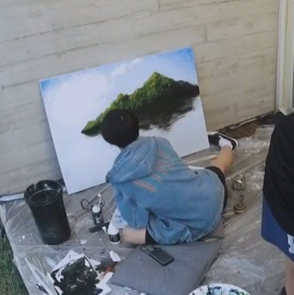
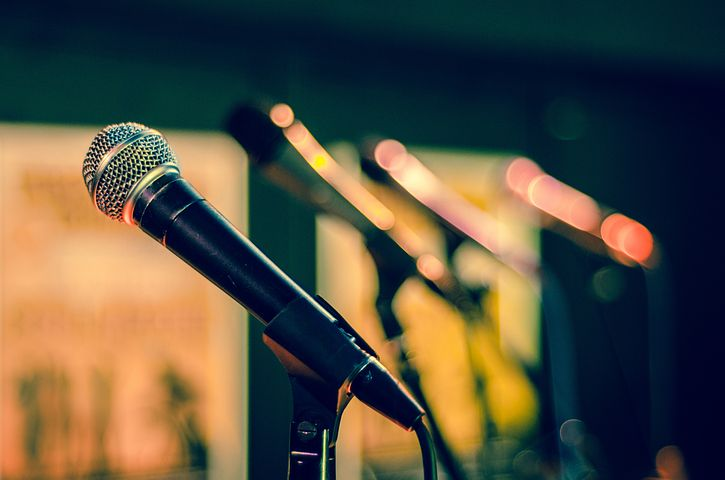
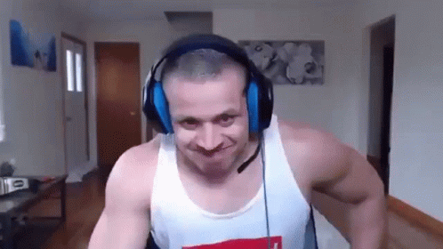

- HOME
- ABOUT ME
- HOBBIES
- IDOLS
PAINTING
I love painting, though i am not perfectly good at it. i find it really
intriguing and fun on depicting a philosophy or advices through
art.

SINGING
Not a day goes by without me
singing or humming some melodies. again, i am not perfectly good at it but i am more than happy
that i am and will be improving day by day.

DANCING
In my junior years, i really liked dancing
but because i've gained some weight and i'm way more stress now than before and my skill and determination on dancing
isn't good or enough either. but now, i'm loving it again because i'm starting to gain confidence.

SPORTS
I was really athletic before, i loved different
kinds of sports but because i am really lazy lately and stressed i can't focus on it. but for sure, on my free time such as vacations
i will really start playing again.

GAMING
This is what i'm doing right now aside from
school, i use my free time on playing games/video games that can satisfy my brain to ease up the stress that
i am feeling though sometimes it is some sort of a stress too.
